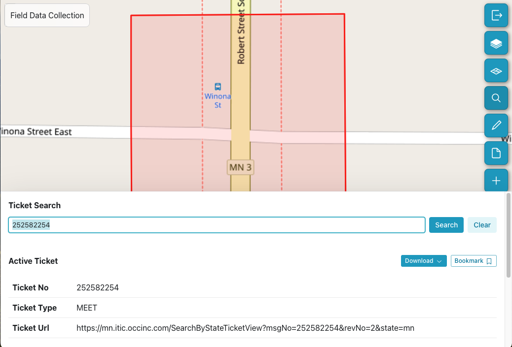
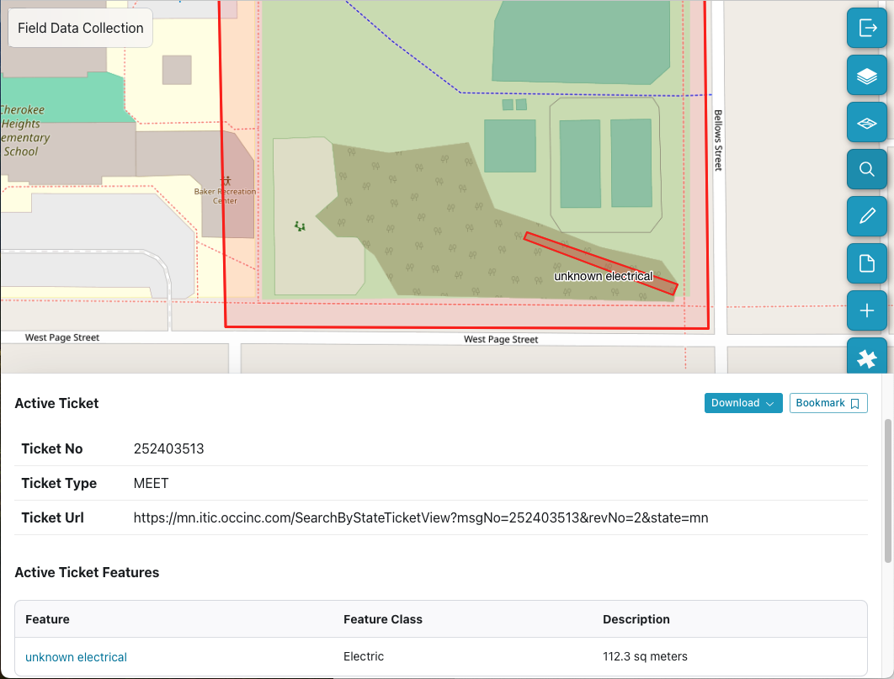
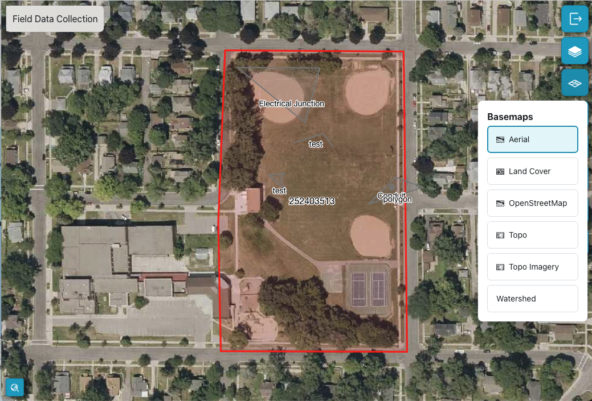
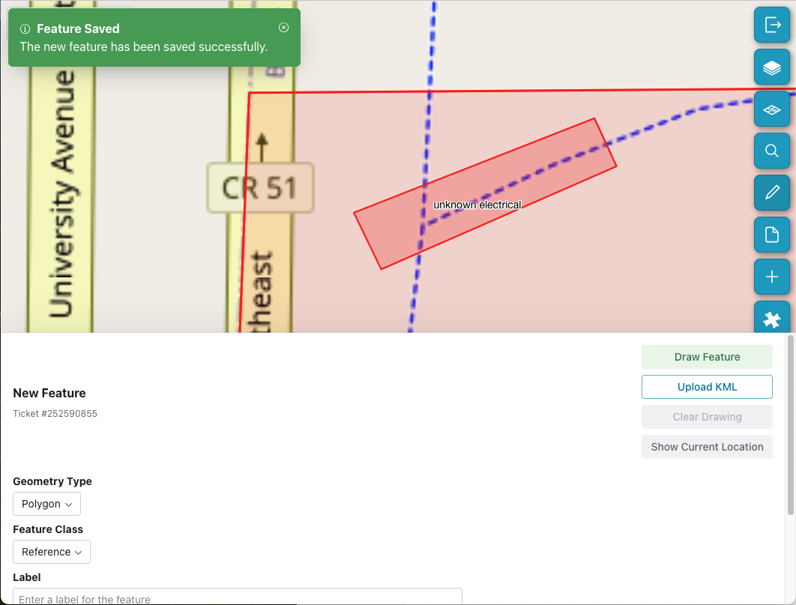
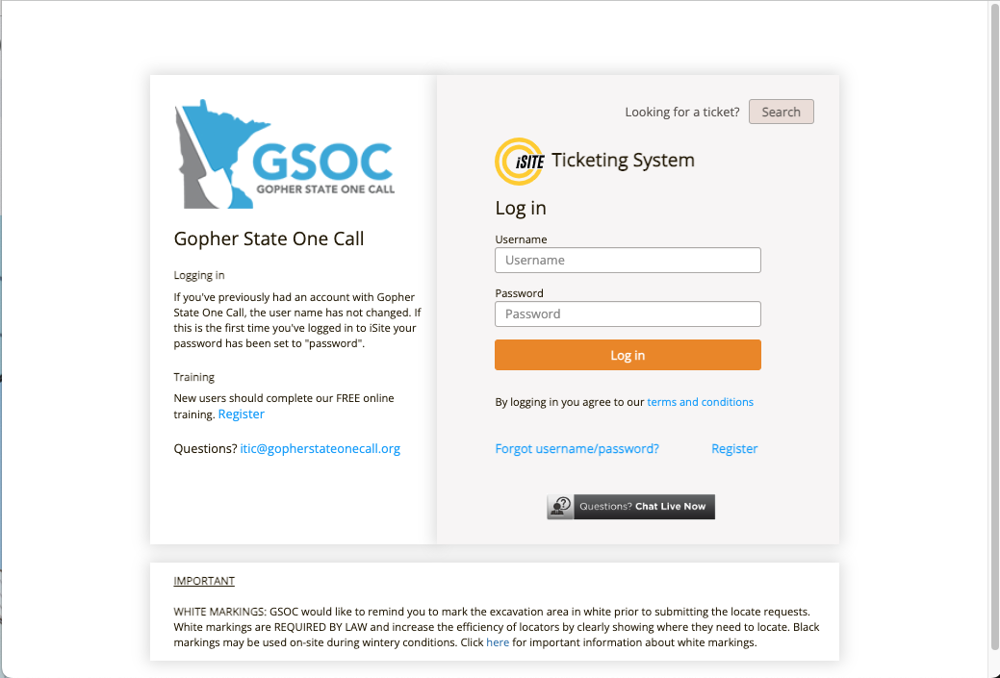
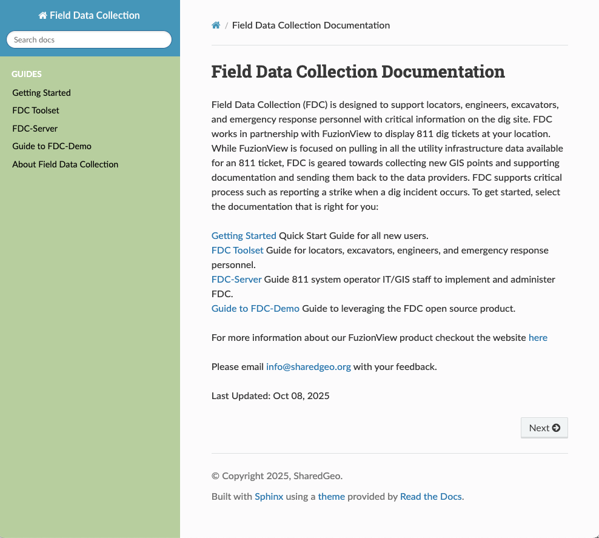

FDC Toolset
Search for a Ticket
To get started, use Search to open an existing 811 ticket by entering the ticket number. Once you open your ticket the two inactive tools - Add/Edit Features and Manage documents tools - are enabled. Information about the ticket is displayed:
Ticket Number
Ticket Type
Ticket URL
Scroll down to see the Features that were in the 811 ticket. Features you add or edit will also be displayed here.

Active 811 Ticket
Search for an 811 Ticket
My Tickets
Scroll down to see a list of your tickets. Once you add or edit a feature, that ticket will appear in your My Tickets list. If you want to remove a ticket from this list, you must first remove any features you have added to the ticket. This action cannot be undone.
Using the My Tickets List
Bookmarks
If you haven’t edited a ticket, you can still add it to your list of tickets and easily return to it, by clicking Bookmark. You can remove the bookmark by clicking the icon to the right of the ticket or feature.

Bookmarked Ticket
Hint
Click anywhere on the map to close search and increase your viewing area.
Using Bookmarks
Basemaps
By default your ticket opened up in the OpenStreetMap basemap. Use the Basemap icon to select from the list of other available map styles:
Aerial
Topo
Topo Imagery

Basemap options
Basemap Options
Layers
By default you see all ticket features. You can select Layers to hide any User Features you added, allowing you to focus on the features from the 811 ticket. Select user features again to make them visible again.

Layers
View or Hide Layers
Add/Edit Features
To add new or edit existing features for this ticket that only you can see, select the Add/Edit Features or pencil icon from the toolset. Define the information needed to capture a new feature: To add new or edit existing features for this ticket that only you can see, select the Add/Edit Features or pencil icon from the toolset. Define the information needed to capture a new feature:
Geometry Types you want to add: a point, a polygon, or a line.
Choose the appropriate Feature Class such as Reference, Electrical, etc.
Create a Label that will identify this feature in the future.
It is always helpful to include Notes to describe the feature you are adding.
Supported Geometry Types
Draw Feature
Once you click the Draw Feature button you are in the drawing mode. Click on the map at the site of the feature you want to add.
For a point, click again to create the point.
For a line, click once, then drag to the end of the line and click again.
For a polygon, click at each change in direction and then double click to close the polygon.
To edit a feature you created, double click on it. It will turn yellow, then you can select and drag lines or points or corners of the polygon.
You can Clear the drawing if you need to start over.
Drawing a New Feature
Note
Don’t forget, when you’re finished, select Save Feature.

Save Feature
Editing Saved Features
Upload KML
If you have feature data in a Keyhole Markup Language (KML), you can upload it to FDC to create a new feature. A KML file is an XML-based file format used for displaying geographic data on 2D and 3D maps.
Importing and Exporting Features
Document Manager
You can collect photos, video, and other document types and associate them with your active ticket. Click Upload Files to select one or more documents. All attached documents will be displayed in the Document Manager until you remove them. Only you can view these documents. You can add as many documents as you need or delete older unneeded files.

Document Manager
Document Management
New 811 Ticket
You can use FDC to link to Gopher State One Call (GSOC) and create a new ticket. Click the plus sign to login into GSOC and create a ticket. Go back to FDC by clicking the back arrow in your browser to return to fdc.sharedgeo.net

Create a new 811 Ticket
Report a Field Strike
When a field strike occurs, it’s important to report the damage as soon as possible. Click on the hazard icon to get the information you need to quickly contact GSOC.

Info to report a strike
Reporting a Strike
Documentation
You can access the FDC user guide by clicking on the information icon. Use your browser back button to return to fdc.sharedgeo.org.

FDC User Guide
The FDC User Guide
Caution
The FDC application is designed to supplement your 811 ticket. Not all utility information has been shared and some features in your ticket boundary may not be shown.
In Summary
Last Updated: Apr 19, 2026